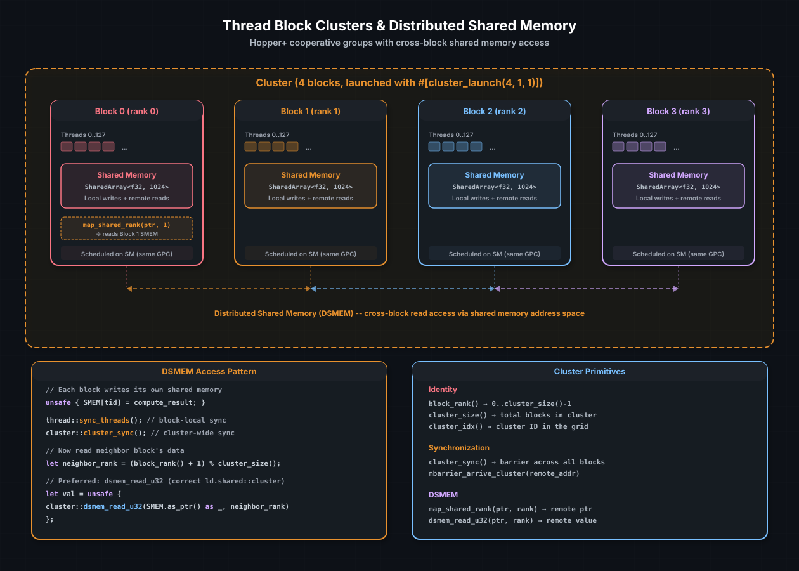

Cluster Programming#
A thread block cluster is a group of thread blocks guaranteed to run simultaneously on SMs within the same GPC (Graphics Processing Cluster). Introduced in Hopper (SM 90), clusters give you something that standard CUDA does not: cross-block shared memory access without going through global memory.
In normal CUDA, thread blocks are independent. Block 0 cannot read block 1's shared memory. With clusters, the hardware maps all cluster members' shared memory into a unified distributed shared memory (DSMEM) address space. Any thread in the cluster can read any block's shared memory — directly, at shared memory latency, no global memory round-trip.
cuda-oxide exposes clusters through cuda_device::cluster and the
#[cluster_launch] attribute. This chapter covers the programming model,
DSMEM access patterns, and how clusters combine with TMA multicast for
high-performance matrix kernels.
請參閱
CUDA Programming Guide — Thread Block Clusters for the hardware specification, GPC constraints, and maximum cluster sizes.
The cluster model#
{kind=link}

A 4-block cluster. Each block has its own shared memory, but the hardware
maps all four into a unified DSMEM space. Blocks can read each other's
shared memory after a cluster_sync() barrier. The dashed arrows show
cross-block DSMEM reads.#
A cluster is defined at launch time. The hardware schedules all blocks in a cluster onto SMs within the same GPC, ensuring low-latency cross-block communication. The maximum cluster size is architecture-dependent — Hopper supports up to 8 blocks per cluster.
Declaring a cluster kernel#
In cuda-oxide, you annotate the kernel with #[cluster_launch]:
use cuda_device::{kernel, cluster_launch, thread, cluster, SharedArray};
#[kernel]
#[cluster_launch(4, 1, 1)]
pub fn cluster_kernel(/* ... */) {
// This kernel runs with clusters of 4 blocks in the X dimension
let rank = cluster::block_rank();
let size = cluster::cluster_size();
// ...
}
The #[cluster_launch(x, y, z)] attribute:
Injects a
__cluster_config<X, Y, Z>()function that sets the PTX.reqnctaperclusterdirective.On the host side, the launch must use
launch_kernel_exwith a matchingcluster_dimparameter.
Cluster identity#
Every thread can query its position in the cluster hierarchy:
use cuda_device::cluster;
let rank = cluster::block_rank(); // 0..cluster_size()-1 within this cluster
let size = cluster::cluster_size(); // total blocks in the cluster
let cidx = cluster::cluster_idx(); // which cluster in the grid
let ncls = cluster::num_clusters(); // total clusters in the grid
block_rank() is the key identifier for DSMEM access — it tells you which
block's shared memory to read. Think of it as a "block-local device ID"
within the cluster.
For the full 3D cluster position:
let cx = cluster::cluster_ctaidX(); // block's X position in the cluster
let cy = cluster::cluster_ctaidY(); // block's Y position in the cluster
let cz = cluster::cluster_ctaidZ(); // block's Z position in the cluster
Synchronization#
Clusters introduce a new synchronization level between block sync and global sync:
Primitive |
Scope |
Use when |
|---|---|---|
|
Block |
Synchronizing within a single block |
|
Cluster |
Synchronizing across all blocks in the cluster |
|
Cluster |
Signaling a barrier in a remote block |
The correct synchronization sequence for DSMEM access is always:
Write to local shared memory
sync_threads()— ensure all local threads have writtencluster_sync()— ensure all blocks have reached this pointRead from remote shared memory via DSMEM
Missing either sync is a data race. sync_threads() without
cluster_sync() means your block is ready but the neighbor might not be.
cluster_sync() without sync_threads() means the cluster is synchronized
but your own block's writes might not be visible yet.
TMA multicast with clusters#
Clusters unlock one of TMA's most powerful features: multicast copies. A single TMA load can write the same tile into the shared memory of multiple blocks simultaneously:
use cuda_device::tma::cp_async_bulk_tensor_2d_g2s_multicast;
// CTA mask: bits 0..3 set → all 4 blocks in the cluster receive the tile
let cta_mask: u16 = 0b1111;
unsafe {
cp_async_bulk_tensor_2d_g2s_multicast(
smem_dst, desc, tile_x, tile_y, bar_ptr, cta_mask
);
}
Without multicast, each block would issue its own TMA copy — four separate global memory reads. With multicast, the TMA engine reads the data once and distributes it to all four blocks. This is particularly valuable for GEMM kernels where the same tile of A or B is needed by every block in the cluster.
The cta_mask is a bitmask where bit i is set if rank i should receive
the copy. You can selectively multicast to a subset of the cluster.
A practical example: halo exchange#
A common use case for clusters is halo exchange in stencil computations. Each block processes a tile of a grid and needs boundary elements from its neighbors. Without clusters, this requires global memory writes and reads (or careful stream synchronization). With clusters, it is a local operation:
use cuda_device::{kernel, cluster_launch, thread, cluster, SharedArray, DisjointSlice};
const TILE_W: usize = 256;
const HALO: usize = 1;
const SMEM_W: usize = TILE_W + 2 * HALO;
#[kernel]
#[cluster_launch(4, 1, 1)]
pub fn stencil_1d(input: &[f32], mut output: DisjointSlice<f32>, n: u32) {
static mut SMEM: SharedArray<f32, { SMEM_W }> = SharedArray::UNINIT;
let tid = thread::threadIdx_x() as usize;
let rank = cluster::block_rank();
let global_idx = rank as usize * TILE_W + tid;
// Load interior (offset by HALO for halo slots)
unsafe {
if global_idx < n as usize {
SMEM[tid + HALO] = input[global_idx];
}
}
thread::sync_threads();
cluster::cluster_sync();
// Load left halo from previous block
if tid == 0 && rank > 0 {
let prev_rank = rank - 1;
unsafe {
SMEM[0] = f32::from_bits(cluster::dsmem_read_u32(
SMEM.as_ptr().add(TILE_W) as *const u32, prev_rank
));
}
}
// Load right halo from next block
if tid == 0 && rank < cluster::cluster_size() - 1 {
let next_rank = rank + 1;
unsafe {
SMEM[TILE_W + HALO] = f32::from_bits(cluster::dsmem_read_u32(
SMEM.as_ptr().add(HALO) as *const u32, next_rank
));
}
}
thread::sync_threads();
// 3-point stencil: output[i] = 0.25 * left + 0.5 * center + 0.25 * right
if global_idx < n as usize {
let left = unsafe { SMEM[tid + HALO - 1] };
let center = unsafe { SMEM[tid + HALO] };
let right = unsafe { SMEM[tid + HALO + 1] };
unsafe {
*output.get_unchecked_mut(global_idx) = 0.25 * left + 0.5 * center + 0.25 * right;
}
}
}
Without clusters, the halo exchange would require writing boundary elements
to global memory, synchronizing via events or streams, and reading them
back. With clusters, it is a cluster_sync() plus a dsmem_read_u32 —
shared memory latency, no global memory.
Constraints and best practices#
Constraint |
Detail |
|---|---|
Maximum cluster size |
8 blocks (architecture-dependent) |
Scheduling guarantee |
All cluster blocks run simultaneously on the same GPC |
DSMEM latency |
Similar to local shared memory (~5–10 cycles) |
Cluster dim must be declared |
|
Block count must be divisible |
Grid blocks in each dimension must be a multiple of cluster size |
Mixed cluster/non-cluster |
Not supported in the same kernel |
小訣竅
Clusters impose a scheduling constraint: the hardware must co-locate all blocks on the same GPC. If the cluster is too large relative to the GPC capacity, occupancy drops. Start with small clusters (2–4 blocks) and measure before scaling up.
請參閱
Tensor Memory Accelerator — TMA multicast requires clusters for cross-CTA delivery
Matrix Multiply Accelerators — CG2 mode uses cluster pairs for wider MMA tiles
Shared Memory and Synchronization — the per-block foundation that DSMEM extends